Field notes
A few things I found while staying wild.
No species names, no claims—just small wonders along the trail, and the skies that made me look up.
Forest finds
A mushroom field notebook, without the taxonomy.
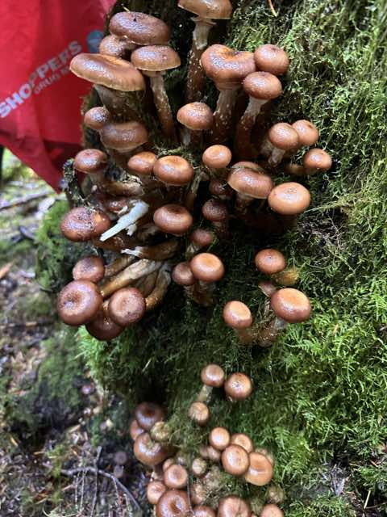
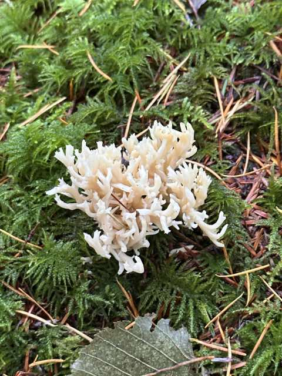
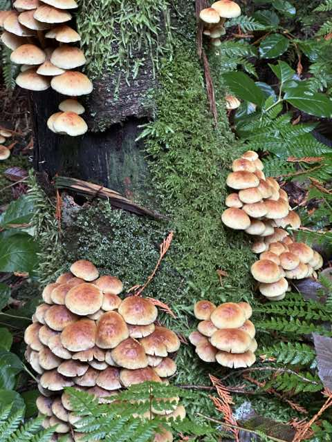
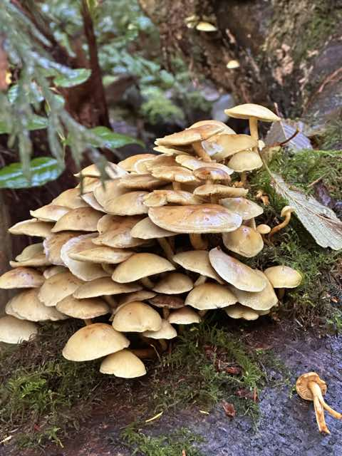
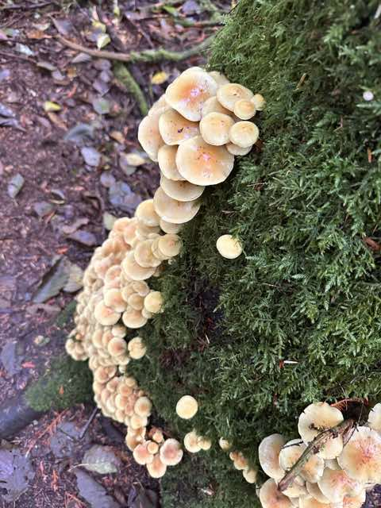
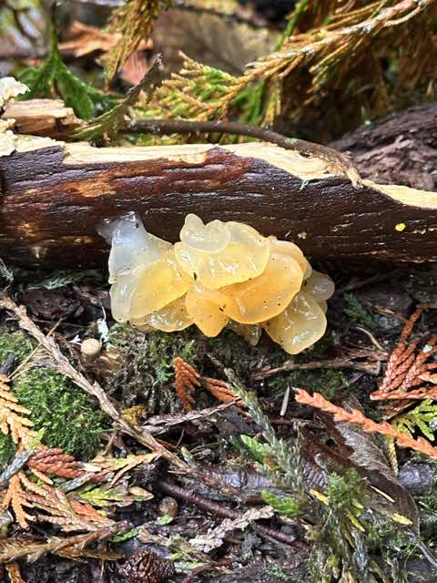
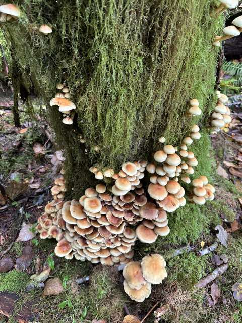
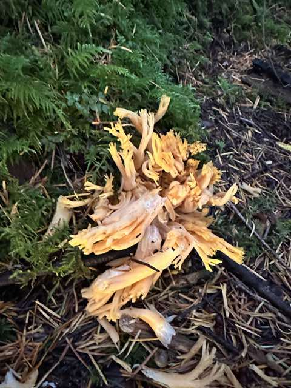
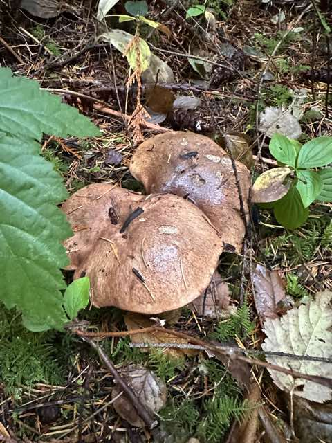
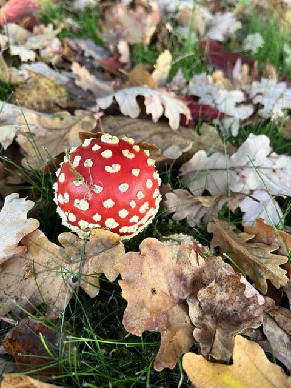
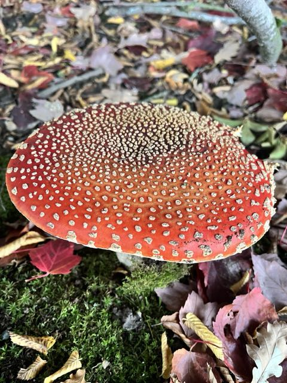
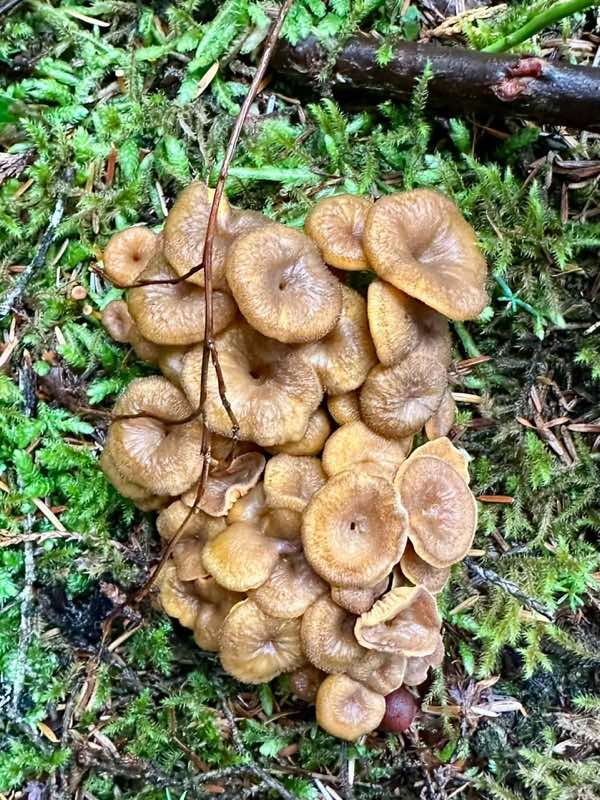
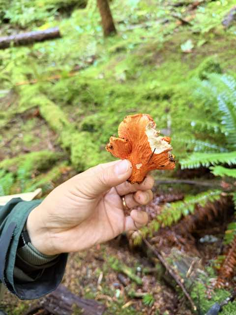
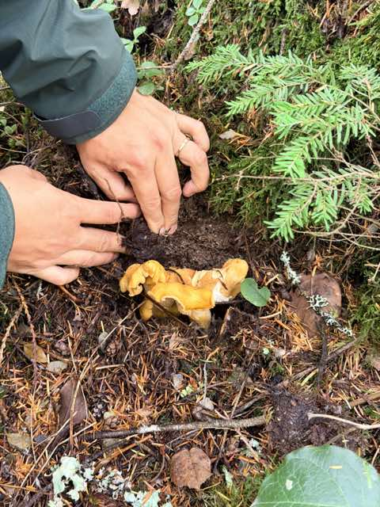
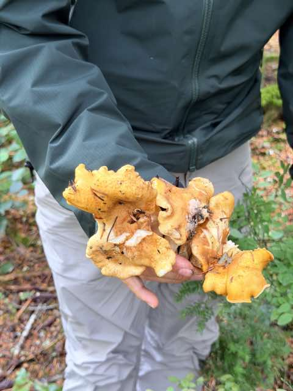
Night skies
Aurora, the Milky Way, and a little motion through the dark.
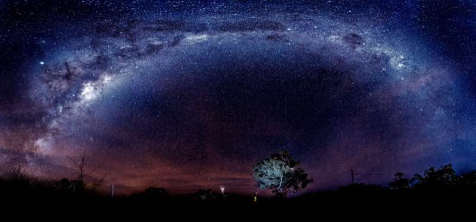
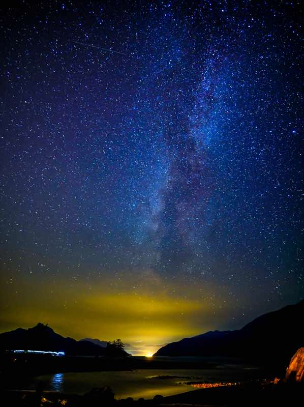
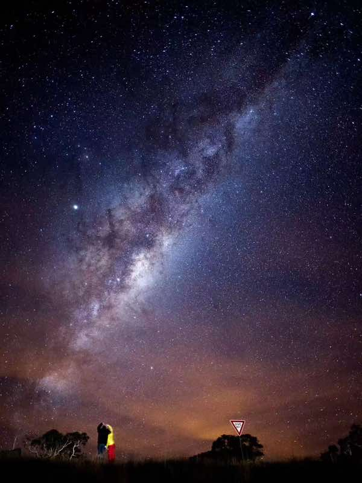
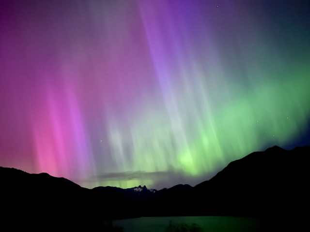
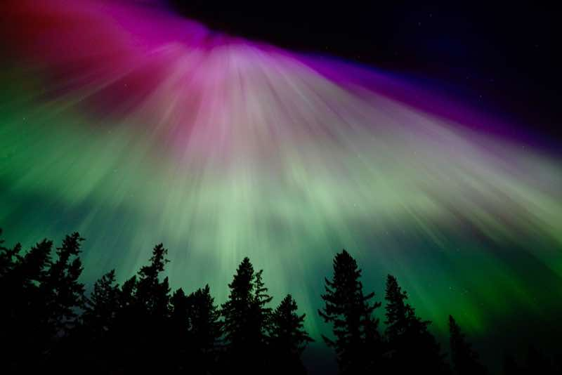
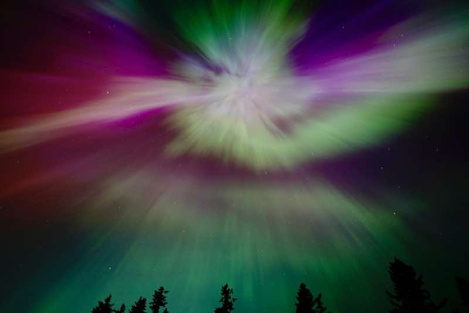
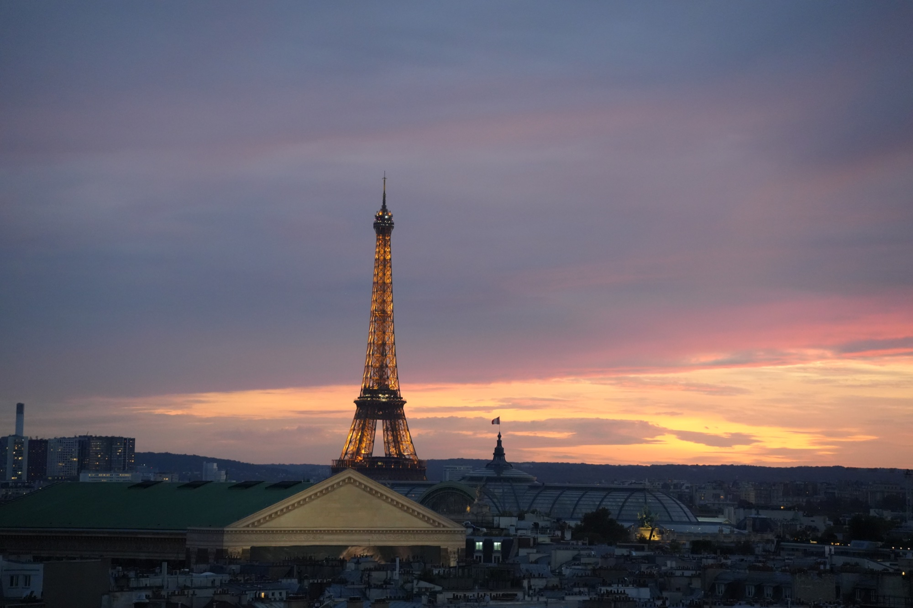
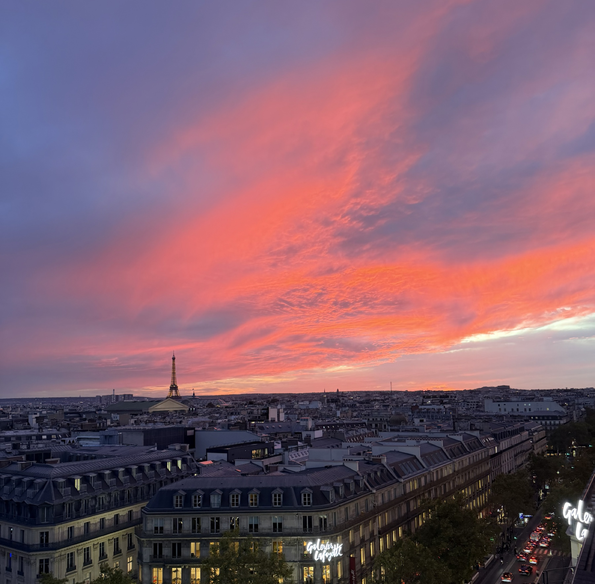